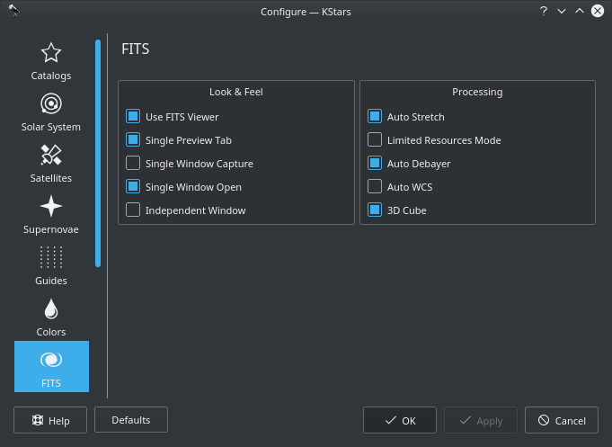
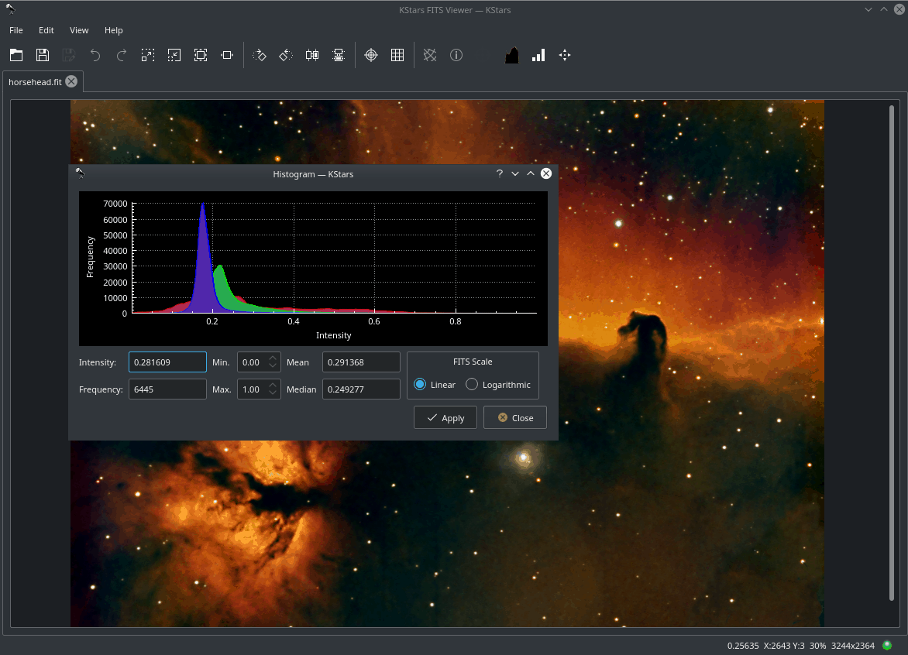
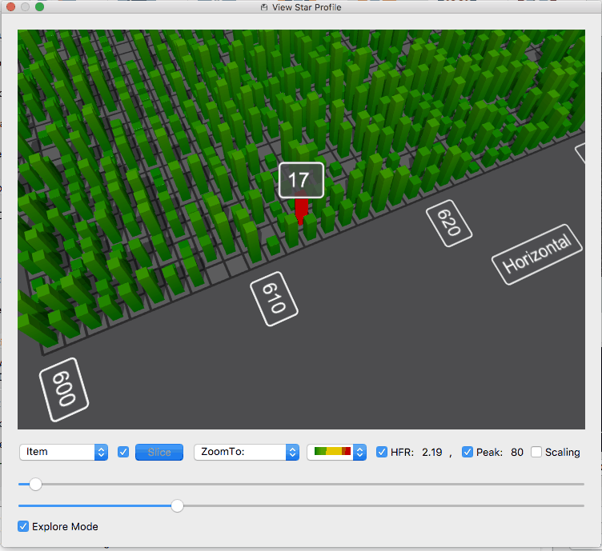
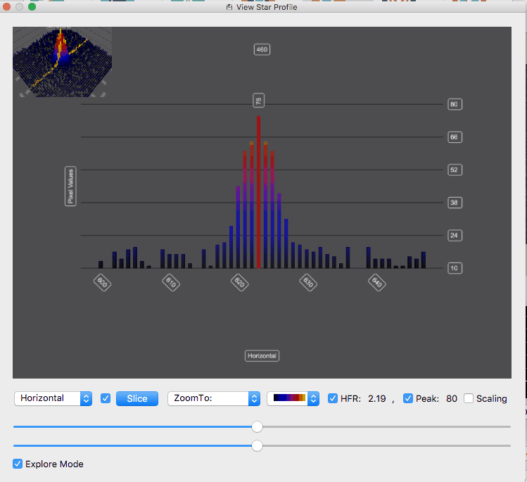
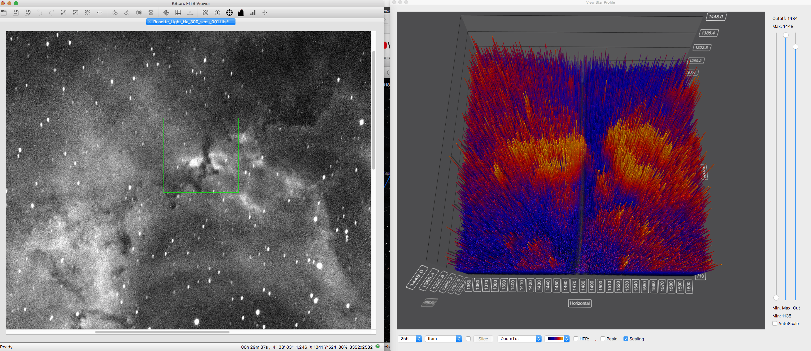

FITS Viewer Tool
The Flexible Image Transport System (FITS) is the standard format for representing images and data in Astronomy.
The KStars FITS Viewer tool is automatically invoked when new images are recieved from the camera. It is primarily used to view and examine FITS data. It is not designed for editing of FITS Images. To open a FITS file, select Open FITS... from the File menu, or press Ctrl+O.

The above diagram illustrates the FITS Viewer work area and window. The tool provides basic functions for image display. FITS data depth is preserved throughout all processing, open, and save functions. While the tool adhere to the FITS standard, it does not support all possible FITS features:
- Support for only one image per file.
- Support for only 2D and 3D data. 1D data are discarded.
The FITS Viewer window is divided into the following regions:
- Main Menu
- File
- Standard Open, Save, and Save As actions.
- FITS Header: Display FITS header table data.
- Debayer: Covert RAW image to RGB.
- Edit
- Undo: Undo last action.
- Redo: Redo last action.
- Copy: Copy image to clipboard.
- View
- Zoom Controls: Zoom in, Zoom out, standard Zoom.
- Filters: Auto Stretch, Contrast, High Pass, Rotate, Flip.
- Mark Stars: Detect and mark stars in the image.
- Main Toolbar
- Open File.
- Save File: Save FITS data. Any filters applied to the image will be saved.
- Save File As.
- Undo last action.
- Redo last aciton.
- Zoom In: Zoom in up to a maximum of 400%. For large images thie operation can be very memory intensive. Turn on Limited Resource Mode to save memory.
- Zoom Out.
- View in Actual Size.
- Zoom to fit.
- Rotate Right.
- Rotate Left.
- Flip Horizontal.
- Flip Vertical.
- Show Crosshairs: Toggles crosshairs in the center of the image.
- Show Pixel Gridlines: Toggles pixel grid.
- Show Equatorial Guidelines: Toggles Equatorial Grid if FITS contains a valid WCS header.
- Show Objects in Image: Identifies objects such as stars, galaxies, and nebulae within the image.
- Center Telescope: Toggle Center Telescope mode. When active and if the image contains a valid WCS header, clicking any where in the image
- Histogram: Toggle histogram view in the side panel.
- Statistics: Toggle FITS Statistic view in the side panel.
- Auto Stretch: Apply Auto Stretch filter to the image.
- Side Panel: The side panel can be opened by dragging the separator to the right. When dragged to the left, the side panel can also be closed.
- Statistcs: Displays image statistics including Minimum, Maximum, Average, and Median values.
- Histogram: Displays image histogram with controls to adjust the minimum and maximum values for each channel. Both linear and logarithmic scalings are available to apply to the image.
- FITS Header: Displays a table for FITS header keywords, values, and comments.
- Recent Images: Displays recently opened images. Clicking on any image will load it.
- Image Display Area. Hovering over the image will update the status bar values accordingly.
- Status Bar: From right to left, the following status indicators are available:
- Loading Indicator: The LED becomes yellow when an image is getting loaded and turns green after loading is successfully done. If there are problems with loading the image, it turns red.
- Resolution: Image resolution in pixels.
- Cartesian Coordinates: Displays and updates the current mouse position as you hover over the image. It include the X and Y position in addition to the current value.
- Equatorial Coordinates: If the image contains a valid WCS header, the J2000 Right Ascension (RA) and declination (DE) values are displayed.
In addition to image display, the viewer can process World-Coordinate-System (WCS) header if present within the FITS file and provides useful information regarding the objects found within the image, equatorial grid overlay, popup menu, and the ability to slew the mount (if connected) to any point within the image.
Several filters can be applied to enhance the image include auto stretch and high contrast. Depending on the image size, these operations can take a few seconds to complete. The bottom status bar displays the current pixel value and current X & Y coordinates of the mouse pointer within the image. Furthermore, it includes the current zoom level and the image resolution.
When loading a bayered image, the viewer can automatically debayer the image if Auto Debayer is checked in the FITS Settings. The debayering operation fetches the bayer pattern (e.g. RGGB) from the FITS header. If none exists, you can alter the debayering algorithm and pattern from the File menu or by using the Ctrl+D shortcut.
Since operations such as auto debayering and auto WCS are computationally expensive and stress the processor on low-powered embedded devices, you can toggle their behavior in KStars Settings FITS page.

Hovering over any option shall display a detailed tooltip that explains its function.
Features
- Support for 8, 16, 32, IEEE-32, and IEEE-64 bits formats.
- Support Color FITS images (3D Cubes) and Bayered FITS images.
- Histogram with linear, logarithmic, and square-root scales.
- Brightness/Contrast controls.
- Pan and Zoom.
- Auto levels.
- Statistics.
- Rectangular and Equatorial Grids (if WCS info is present).
- Detection and highlight of stars.
- FITS header query.
- Undo/Redo.
- Histogram
- 
Displays multi-channel FITS histogram. The user can rescale the image by optionally defining an upper and lower limit for the cutoff region. The rescaling operation (linear, logarithmic, or square-root) may then be applied to the region enclosed by the upper and lower limits.
- FITS Header
- Displays a read-only table listing FITS header keywords and values.
- Statistics
- Provides simple statistics for minimum and maximum pixel values and their respective locations. FITS depth, dimension, mean, and standard deviation.
Embedded FITS Viewer

In Ekos Focus, Guide, and Align modules, captured images are displayed in the embedded FITS Viewer. The embedded viewer includes a floating bar that can be used to perform several functions:
- Zoom Out
- Zoom In
- Default Zoom
- Zoom To Fit
- Toggle Cross Hairs
- Toggle Pixel Gridlines
- Toggle Detected Stars: Highlight detected stars with red circles.
- Star Profile: View detailed 3D star profile.
The floating bar is automatically hidden once the mouse leaves the embedded viewer area. You can use the mouse to pan and zoom just like the standalone FITS Viewer tool. The green tracking box can be used to select a specific star or region within the image, for example, to select a guide star.
3D Star Profile & Data Visualization Tool

The 3D data visualization tool can plot 3D graphs of the selected region of the image. This is particularly useful for astrophotographers who want to visualize the profile of a star they are considering focusing or guiding on. For scientists, it enables them to examine a cross-section of the data to understand the relative brightness of different objects in the image. Additionally, it empowers imagers who want to visually see what is going on in their data collection in a new way.
To use the new feature, the user needs to select the View Star Profile icon in one of the Ekos Module Views, or in the FITS Viewer. Then, the region selected in the green tracking box will show up in the 3D graph as shown above. The user will then have one of the following toolbars at the bottom.


At the far left, the sample size combo box will let the user select the size of the image crop shown in the graph. This option is only available in the Summary Screen, the Align Module, and the FITS Viewer. The second combo box lets the user control whether they are selecting an individual item, or a row, or a column of pixels. The slice button will be enabled if the user selects Row or Column. It will put the graph in slice mode so that the user can see a cross-section view of the image. Third, is a checkbox that will open up two sliders that will let the user drag the slider to change the selection. This is extremely useful in the slide mode to change the selected point and to move the cross section around the graph. It is also useful in the normal view when in Explore Mode so that the user can zoom around the image examining the pixels.

Then the user has the Zoom To combo box, which the user can use to zoom the graph to different preset locations. Next is the combo box that lets the user select the color scheme of the graph. Then are the HFR and the Peak checkboxes, which will both turn on the HFR and Peak labels on each found star in the image, but will also display one of them at the bottom of the screen. And finally comes the Scaling checkbox, which enables the Scaling Side Panel. There are three sliders in that panel, one to control the minimum value displayed on the graph or “black point”, one to control the maximum value displayed in the graph or the “white point”, and a third that is disabled by default that lets the user control the cutoff value for data displayed on the graph.

This third slider is very useful to get really big peaks out of the way so you can study the finer details in the image. There is a checkbox at the top to enable/disable the cutoff slider. And finally at the bottom of the sliders is the Auto scale button. This will auto scale the sliders as you sample different areas in the image. It will not only optimize the display of the data but will also affect the minimum and maximum points of the slider. If you disable auto scale, then as you sample different parts of the image, they will be displayed at the same scale. A particularly useful way to use this is to select an area of your image using auto scale, tweak the min, max, and cutoff sliders to your liking, and then turn off the auto scale feature to explore other areas of the graph.
